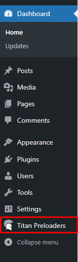
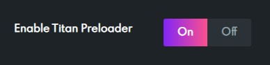
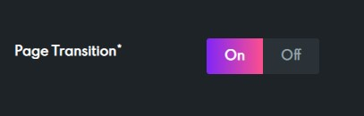
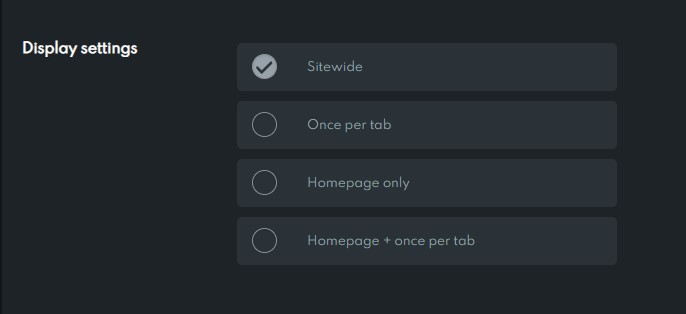
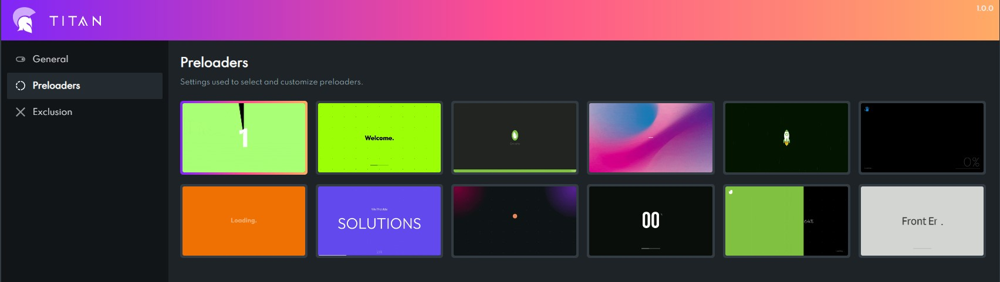
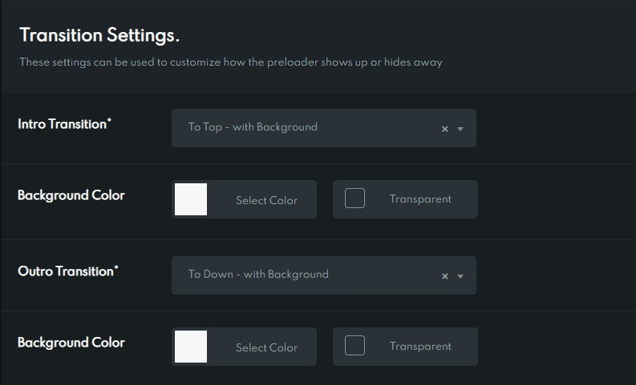
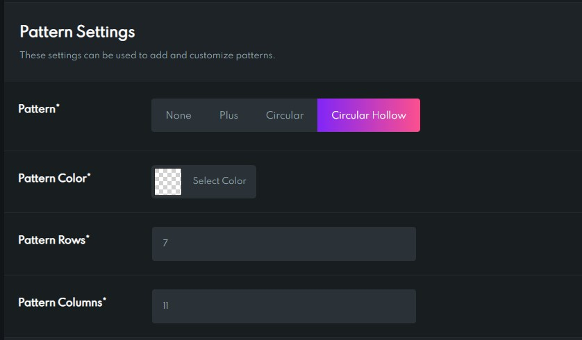
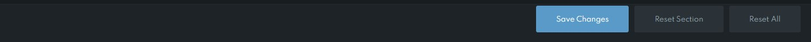
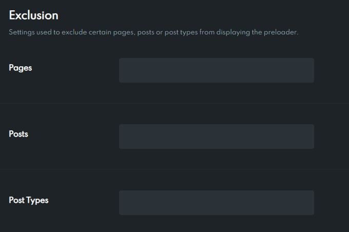

Thank you for purchasing our plugin. If you have any questions that are beyond
the scope of this help file, please feel free to email via our user page contact form here.
To use this WordPress Plugin we recommend using a host that supports:
- PHP version 7.0 or greater.
- MySQL version 5 or greater OR MariaDB version 10.0 or greater.
We recommend you make sure that your server PHP configuration limits are as follows:
- max_execution_time 600
- max_input_time 600
- memory_limit 256M
- post_max_size 128M
- upload_max_filesize 128M
- max_input_vars 3000
To install this plugin, you must have a working version of WordPress already installed. If you need help installing WordPress, follow the instructions in WordPress Codex or you can watch the. Below are the useful links for WordPress information.
- WordPress Codex – general info about WordPress and how to install on your server
- First Steps With WordPress – general information that covers a wide variety of topics
- FAQ New To WordPress – the most popular FAQ’s regarding WordPress
Procedure for installing plugin
You can access the plugin admin panel by clicking on the 'Titan Preloaders' menu item on your dashboard menu.

If turned off, the plugin will not display any preloaders to the page.

If turned on, an outro animation will be played when leaving the current page.

These settings allow you to choose how and where the preloaders should appear.

-
Sitewide
The preloaders will appear throughout the site
-
Once per tab
The preloaders will appear when the tab is opened for the first time and never again.
-
Homepage only
The preloaders will appear only on the homepage.
-
Homepage + once per tab
The preloaders will appear when the tab is opened for the first time and when the page being opened is the homepage.
This section is the heart of the plugin. It allows you to select and customize the preloaders to your hearts content.

-
All the preloaders are present at the top. Clicking a preloader will select that preloader.
-
Once a particular preloader is selected you can scroll down and customize the preloader to your liking.
-
It is important to click 'Save' to make sure that your changes are saved.
Most of the preloaders have 'Transition Settings' associated with them.

-
Intro Transition
This transition is played when the page is loaded and the preloader hides to reveal the page.
-
Outro Transition
This transition is played when the user clicks a link to leave the current page and the preloader is revealed to hide the page. Note: 'Page Transitions' in the 'General' section must be turned on for the outro transition to play.
-
Some transitions have additional fields to further modify the transition. These additional fields will appear below the corresponding transition field.
Some of the preloaders have 'Pattern Settings' associated with them.

-
Pattern
Choose the type of character that should make up the pattern or disable it if you like to.
-
Pattern Color
This is the color of the characters used in the pattern.
-
Pattern Rows and Pattern Columns
You can specify how many rows and columns you would like to have in the pattern.

-
Save Changes
this button saves your changes. It is important to click this button to make sure the changes take effect.
-
Reset Section
This button resets the current section back to the default settings. When the button is clicked in 'General' section, all the settings present in that section will return to their default values.
-
Reset All
This button resets all the settings in all the sections back to the default values.
This section allows you to exclude specific pages, posts or any post types. Once excluded, preloaders will not appear on excluded items.

Once again, thanks for purchasing this plugin and if you have any questions relating to this plugin, feel free to ask them as we will be more than happy to help you.